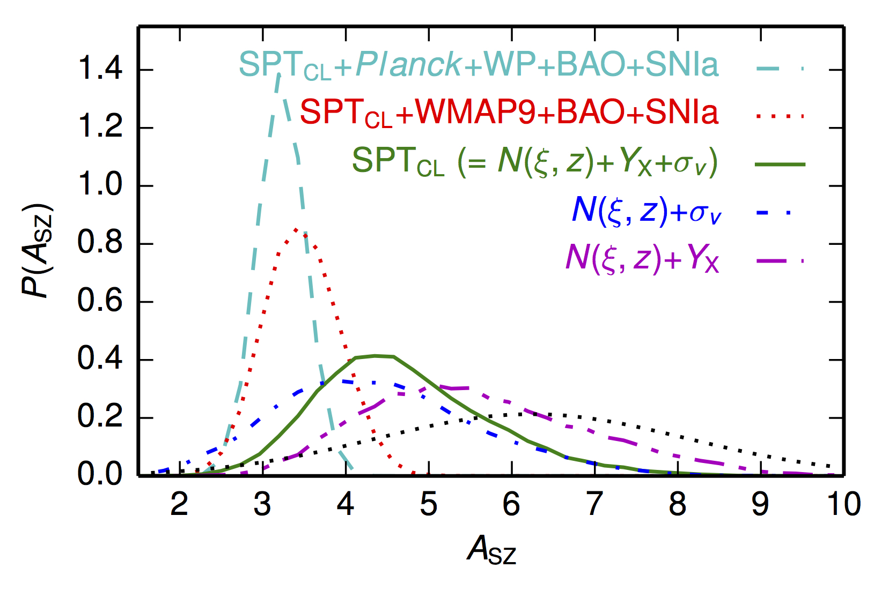
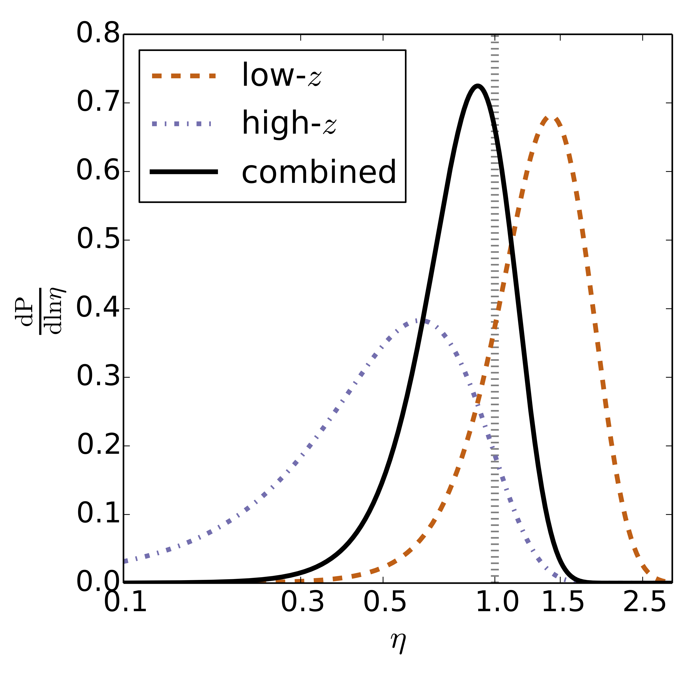
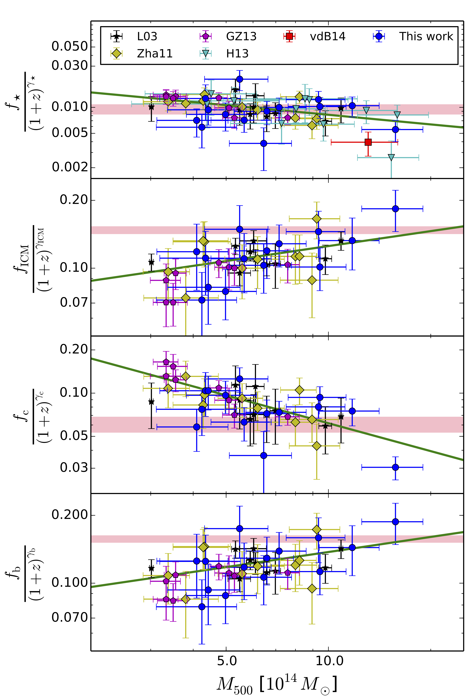
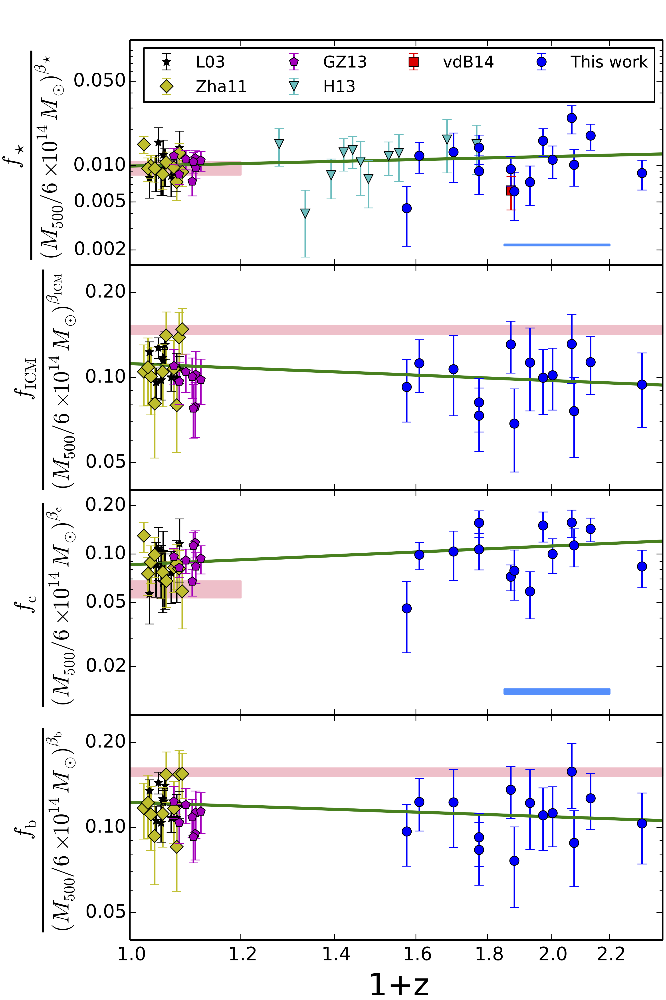
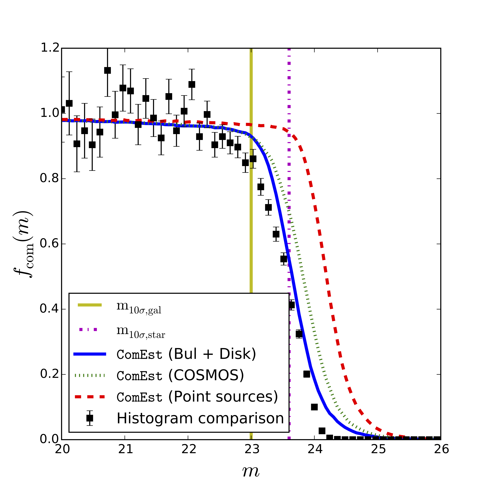

Galaxy Clusters

Galaxy clusters (or cluster of Galaxies) are the most massive objects in the Universe. They originated from the peaks of primordial fluctuations in density fields and graduately grew into the largest gravitationally collapsed systems.
There are three major components in galaxy clusters: Dark Matter, Intracluster Medium (ICM) and stars (mainly residing in galaxies). Galaxy clusters are very massive; their total masses are $\gtrsim 10^{14} \mathrm{M}_{\odot}$, while ICM ans stellar masses are $\approx10^{13}\mathrm{M}_{\odot}$ and $\approx10^{12}\mathrm{M}_{\odot}$, respectively. The figure above can be used to visualize a typical galaxy cluster. The SZE map detected by the SPT-SZ survey and the optical counterpart of the galaxy cluster SPT-CL 0243-4833. The left panel shows the map of the SZE signal-to-noise ratios detected by the SPT, which is reflecting the ICM distribution. On the other hand, the right panel is the zoom-in optical image of this cluster center with the SZE signal-to-noise contours over-plotted. Majority of stars live in the cluster galaxies appearing in yellow. The ICM and stars are dominated by invisible Dark Matter. Figure is taken from Williamson et. al. 2011.
Galaxy clusters are at the crossroad of cosmology and astrophysics. The abundance of galaxy clusters at given cosmic time is sensitive to the underlying cosmology model and there is powerful to probe the growth of large scale structures. On the other hand, various effects among the ICM, galaxies and the Dark Matter via gravity provide an unique laboratory for studying astrophysics, e.g., galaxy evolution. One must understand astrophysics of galaxy clusters in order to utilize them as cosmological tools, and of course vice versa.
Scaling Relations
The relations that link various observables (e.g., the temperature of ICM, number of cluster galaxies, SZE significance, projected ICM pressure, or the total luminosity of X-ray emission from ICM, etc) or mass budgets of clusters are called scaling relations. For example, the X-ray temperature-to-luminosity relation, $T_{\mathrm{X}}-L_{\mathrm{X}}$. One of the most important relations is called the observable-to-mass relation, which links observables to (unobservable) total masses of clusters. Observable-to-mass relations allow us to infer cluster masses of a large sample in an efficient way. The observable which is used to infer the cluster mass is called the mass proxy; calibrating the mass proxy to obtain robust cluster masses is called mass calibration.
A recent study of the SPT-SZ cluster sample is suitable for illustrating the concept of mass calibration. In this case, the mass proxy is $\zeta$, which can be linked to total mass $\mathrm{M}_{500}$ of clusters: \[\zeta = A_{\mathrm{SZ}} \left( \frac{\mathrm{M}_{500}}{\mathrm{M}_{\mathrm{piv}} } \right)^{B_{\mathrm{SZ}}}\left( \frac{E(z) }{E( z_{\mathrm{piv}})} \right)^{C_{\mathrm{SZ}}} \, . \] The constraints of $A_{\mathrm{SZ}}$ using different probes or the combinations of them are shown in the figure on the right side. Different probes give different constraints of the normalization of the scaling relation and therefore different cluster masses. Figure taken from Bocquet et. al. 2015.

Gravitational Lensing
Galaxy clusters are the most massive objects in the Universe, therefoere there are strong lensing effects around them. One of them is called magnification effect, which magnifies the fluxes of background galaxies after being lensed. On the other hand, the angular area on the plane of sky is also distorted due to lensing. As a net result, the number density of a flux-limited sample of background galaxies is changed due to the presence of lensing, and this change is called magnification bias.
Using magnification bias can determine cluster masses and further constrain scaling relations. In Chiu et. al. 2016, we detected the magnification bias effect on the bright background galaxies at $\approx3.5\sigma$ confidence level, and we use this detection to compare the lensing masses to the masses which are independently derived from the SZ effect. In the right figure, the constraints of the mass ratios $\eta \equiv \mathrm{M}_{\mathrm{WL}} / \mathrm{M}_{\mathrm{SZE}}$ are shown. The magnificatoin-inferred mass $\mathrm{M}_{\mathrm{WL}}$ is statistically consistent with the SZE-inferred mass $\mathrm{M}_{\mathrm{SZE}}$, which is indicated by $\eta\equiv1$.

ICM and Galaxy Properties
The properties of ICM and cluster galaxies sheds light on the formation of clusters. Specifically, the ICM and stellar masses residing in galaxy clusters reveals assembly history of structure formation.
In Chiu et. al. 2016, we carried out a pilot study of baryon content of a small sample of SZE-selected SPT clusters using uniform multi-wavelength data sets, e.g., Chandra X-ray, Spitzer NIR, VLT ultraviolet and optical data and mm wavelength data. This allows us to determine the total, ICM and the stellar masses of a mass limited sample $\left(\mathrm{M}_{500}\gtrsim 3 \times 10^{14} \mathrm{M}_{\odot}\right)$ at high redshift $\left(0.6\lesssim z \lesssim 1.3\right)$ for the first time. Moreover, we compare our results to other studies in literature after carefully taking the systematic effects into account. The reuslts are shown on the right. Our cluster sample selected by the SPT-SZ survey is color-coded in blue, while other previous studies at lower redshift $z\lesssim0.1$ are color-coded in the different colors. There are no significant redshift trend in baryon content of massive galaxy clusters out to redshift $z\lesssim1.3$.
The current constraints of baryon content in galaxy clusters, especially the redshift trends, suffers significnatly from systematics, and we are currently to proceed the study of the full sample of SPT clusters (Chiu in prep. 2016).


Photometric Analysis
In Chiu et. al. 2016, I have developed a easy-to-use package, ComEst, to access the imaging quality, esepcially the completeness and purity of source extraction. Specifically, ComEst runs the source extractor directly on the observed image where the synthetic sources are simulated on, and determine the fraction of detected sources to the input catalog of simulated sources as the input. ComEst is purely in python language and can also access to the completeness of imaging as a function of CCD position. Therefore, ComEst is handy for addressing some systematics in some studies, such as lensing magnification.
The figure on the right hand show the result of the completeness (as a function of magnitude) of one pointing of imaging taken by the Blanco Cosmology Survey (BCS).
